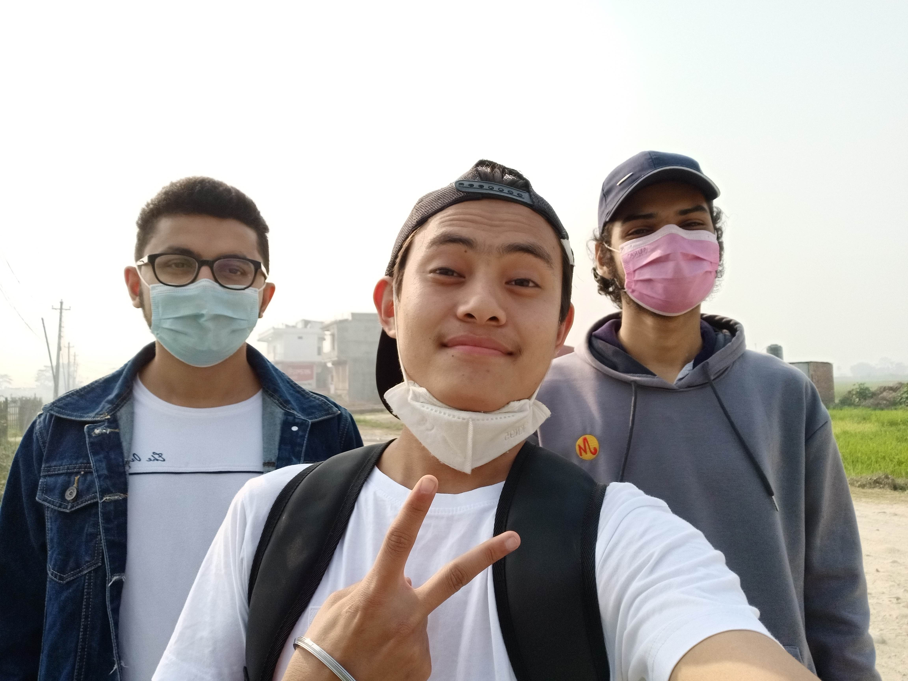
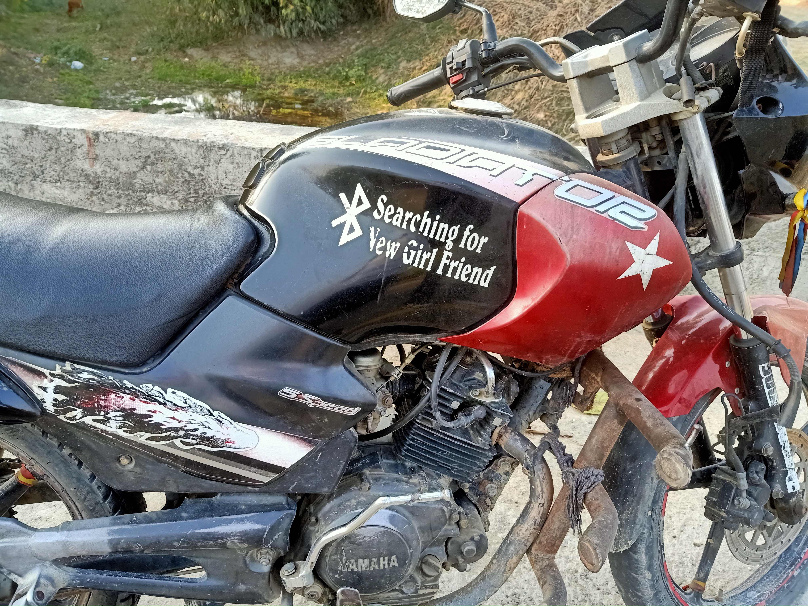

Barju Taal
By Bibek Rai
Extreme Biratnagar heat and crowd was exhausting us on daily basis. Me and some of my friends were discussing on discord of going out of city for a day on a nearest fun place to visit. We ended up going to Barju Taal which is like 13-14 km away from Birtangar. At that time, we were giving 3rd semester exam and as soon as our exam got ended , we fixed this travel. On our travel day , there was strike throughout the nation( on which matter I forget 😄) so we decided to travel walking(also we do not have any personal vechile cause are broke af 😞). We(Bibek Rai, Kishor Pokharel and Sagar Mani Pokharel) meet up at Bargachi,Biratnagar and we headed on the destination.
 Group photo at the starting point
The weather was fine for us to travel. We bought some light snacks on our way. We discussed different aspects of life,culture,habit and other unnecessary talk while travelling 😂.
Some random pictures and videos taken during our walk
Mani bro eating biscuits
 This is og nostalgic picture of childhood . This type of sticker used to carry different vibes. Searching new girlfriend via bluetooth 🤣
After like 2 and half hours , we arrived at barju taal entrance point where we paid like Rs 40 or 50 per head (I don’t actually remember).
Barju taal entrance gate
We wandared the place for a bit and chill. Also we three of us did boating. It cost total Rs 200 for us. I already had experience of boating but other two my friend was new to it. I think they enjoyed this 🤨. There was small park to play especially for children inside the barju taal compound. We tried to enter there but we got denied and also it cost charge 😂.
I would share the photos and videos taken inside as I have nothing left to write 😉. Look and Enjoy
After we finished exploring , we returned. Despite of strike , there was vechile running in small amount. But it was hard for us to get bus,jeep etc. We also asked for lift for returing back but none offered us . Then, we decided to walk again 13-14 km again. We were already exhausted then this walk again makes us more exhaust. 🤣🤣
our fake smile covering exhaustion while returing back
We finally reached bargachi after walking 2 hours straight and splitted and headed to our respective destination.
Hope you like this blog
Review appreciated.
Send me your review on Linkdein